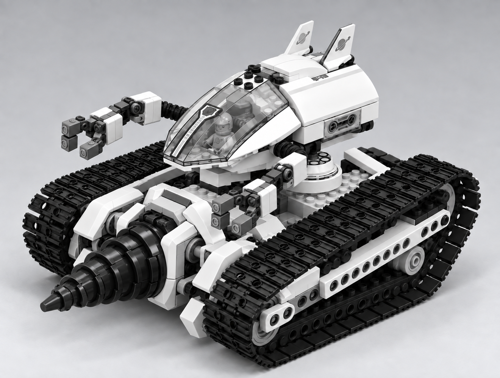

Crystal Reaper
прийнята ціль · конфігурація 1
Два великі жниварні колеса. Окремі маніпулятори, гусеничне шасі та пристикований верхній модуль із видимим стиком.
Мобільна гірнича платформа · адаптивне видобування ресурсів
Дві конфігурації однієї платформи після Service Refit

Зображення — прийняті цілі вигляду T083, не фотографії джерела й не виробничі моделі. Конкретне приховане кріплення, виробнича геометрія та читабельність із камери гри тут не перевірені.
Джерело → Ігровий Production Target: три набори LEGO задають донорські вузли; гра поєднує їх в одну платформу з двома змінними передніми оснащеннями та видимим шляхом матеріалу до вантажної зони.
7645 підтверджує Reaper і від'єднуваний верхній корабель; 7648 та людська гірнича машина з 7693 — донорські рішення бура. Точний комбінований Ore Drill не є готовою моделлю LEGO.
Stable ID: unit.astronauts.mobile_mining_platform · Design Spec: читати · Маніфест: джерела й контрольні суми · PNG огляду.
Рішення директора зафіксовано. Виробнича перевірка моделі та камера гри належать T084/T086; T084 ще не розпочато.
{kind=link}